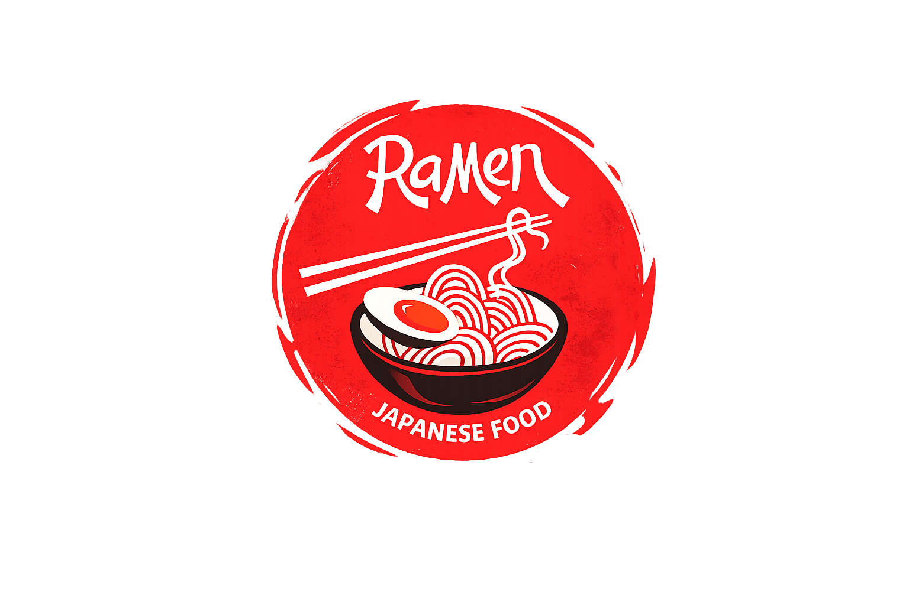
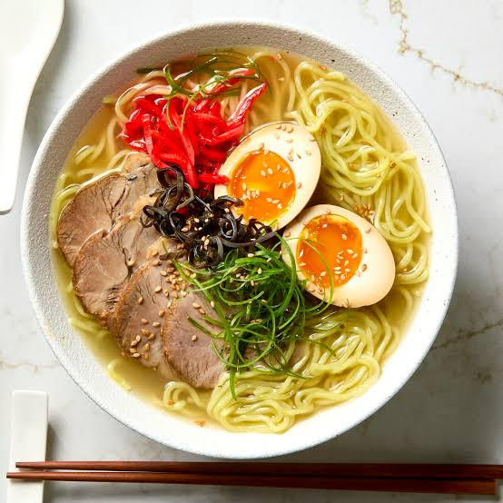
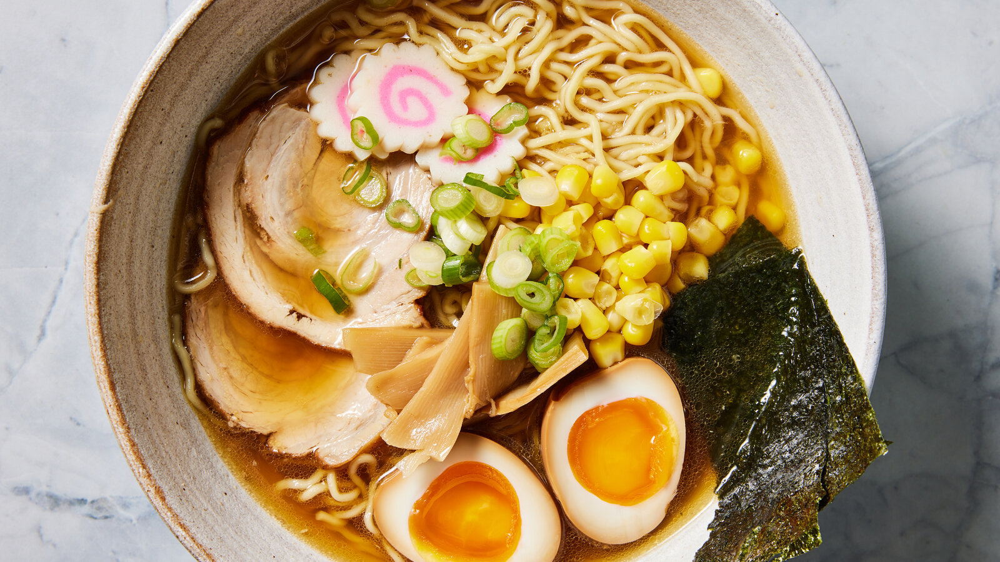
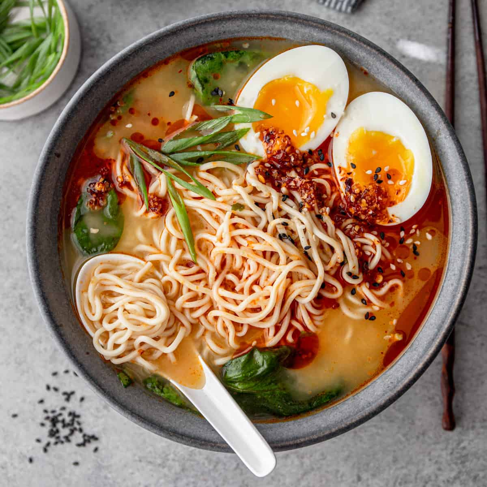

Discover delicious Japanese ramen recipes that you can make at home.

Rich pork broth.

Soy sauce broth.

Miso-based broth.
All About Ramen is your guide to authentic Japanese ramen. Discover easy recipes, cooking tips, and the unique flavors of every bowl.
🍜 Made for ramen lovers, by ramen lovers.